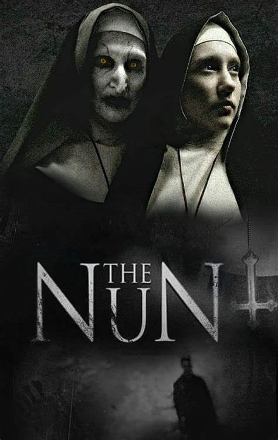
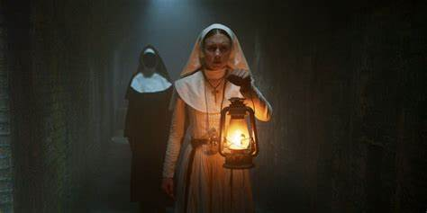

The Nun
The Nun: Directed by Corin Hardy. With Demián Bichir, Taissa Farmiga, Jonas Bloquet, Bonnie Aarons. A priest with a haunted past and a novice on the threshold of her final vows are sent by the Vatican to investigate the death of a young nun in Romania and confront a malevolent force in the form of a demonic nun.
The Nun was released in the United States on September 7, 2018, by Warner Bros. Pictures. Critics praised its performances and atmosphere but criticized its weak narrative and inconsistent logic. It grossed $365 million worldwide, becoming the highest-grossing film of the series.
